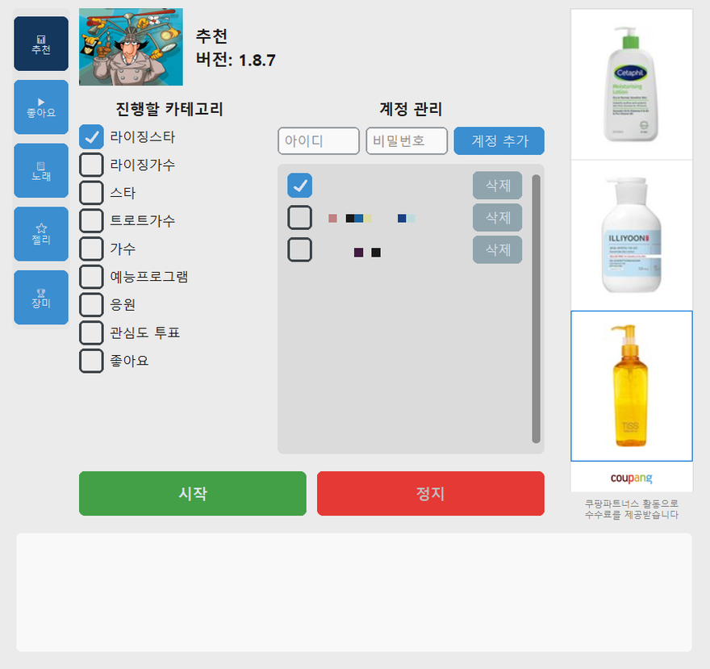
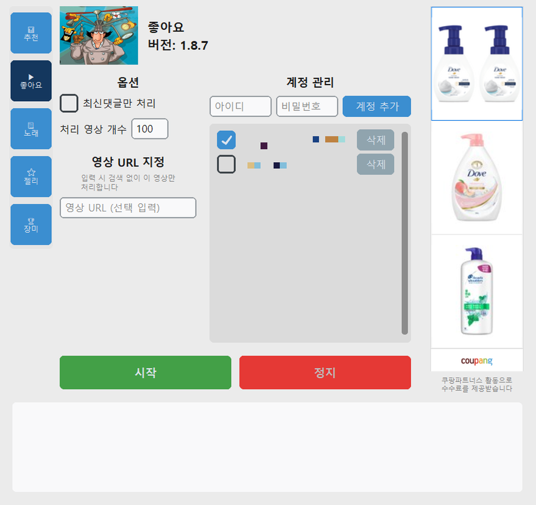
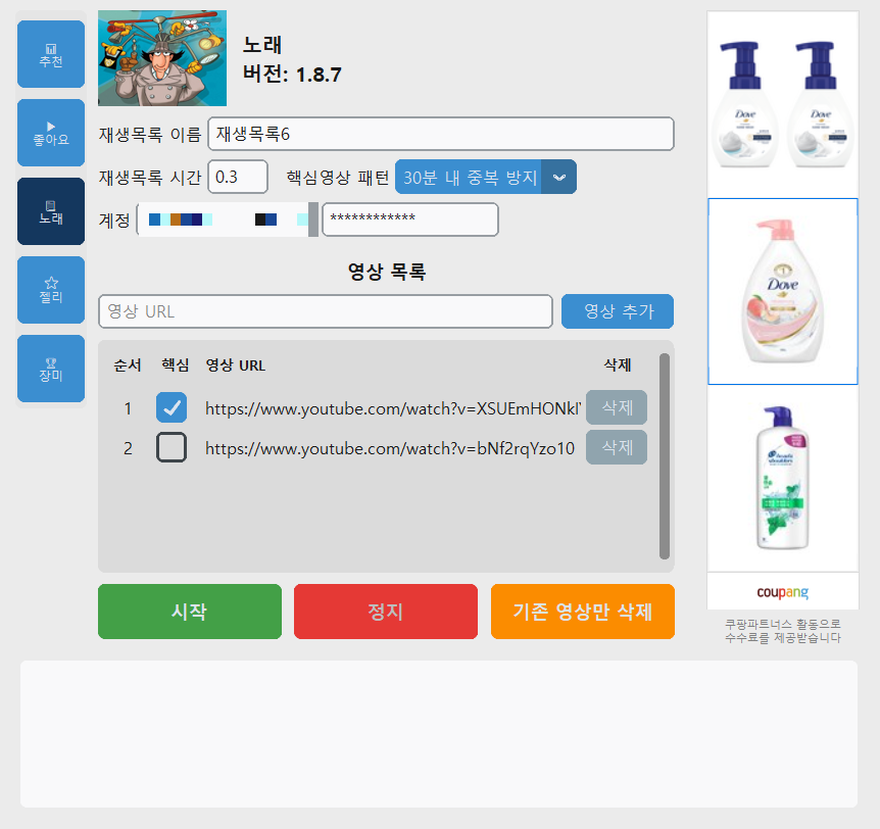

사용 설명서
4. 계정 등록하기
각 기능 화면의 "계정 관리" 표에서 계정을 추가/관리합니다. 계정 목록은 탭마다 따로 저장됩니다.
브랜드평판 / 유튜브
아이디와 비밀번호를 입력하고 "계정 추가"를 누르면 표에 한 줄이 생깁니다. 표 왼쪽 "사용" 체크박스를 켠 계정만 이번 실행에 포함되고, 체크 상태는 저장되어 다음 실행에도 유지됩니다. 잠시 쉬게 할 계정은 지우지 말고 체크만 꺼두면 됩니다. 유튜브 탭에는 구글 계정(이메일 주소)을 넣습니다.
재생목록
재생목록을 만들 구글 계정 하나(아이디·비밀번호)만 입력합니다.
스타플래닛(⭐ 젤리) / 셀럽챔프(🏆 장미)
두 앱은 구글 또는 카카오톡 계정으로 로그인하는 방식이라, 휴대폰에 미리 로그인이 되어 있어야 합니다. 매크로는 이미 로그인된 계정을 골라 자동으로 전환하는 방식으로 동작하며, 비밀번호를 직접 입력하지 않습니다.
- 구글 계정 — 휴대폰 설정 > 계정에 추가해 둔 구글 계정의 주소를 입력 칸에 넣고 "계정 추가"를 누릅니다. 휴대폰에 등록되지 않은 계정은 로그인할 수 없습니다.
- 카카오톡 — 표 맨 위에 고정된 "카카오톡" 줄의 체크박스를 켜면 휴대폰 카카오톡 앱에 로그인된 계정으로 진행합니다. 카카오톡 앱이 로그아웃 상태면 이 줄은 건너뜁니다.
- "출석" 체크박스(🏆 장미 탭) — 출석 장미, 출석완료 후 룰렛, 쿠팡 미션처럼 하루 한 번만 되는 보상을 어느 계정에서 처리할지 고르는 항목입니다. 출석을 받을 계정에만 켜두세요. 아무 계정에도 켜두지 않으면 출석 관련 미션은 모두 건너뜁니다.
계정 정보는 어디에 저장되나요
입력한 계정 정보는 이 PC의 Windows 사용자 폴더(%APPDATA% 아래의 프로그램 설정 폴더)에 파일로
저장되고, 로그인할 때 해당 서비스에만 사용됩니다. 설치 폴더와 분리되어 있어 프로그램을 업데이트하거나
폴더를 옮겨도 그대로 남습니다. 파일은 암호화되어 있지 않으므로 여러 사람이 함께 쓰는 PC에서는
사용하지 않는 것이 안전합니다. 다른 PC로 옮길 때는 이 폴더를 통째로 복사하면 됩니다.


